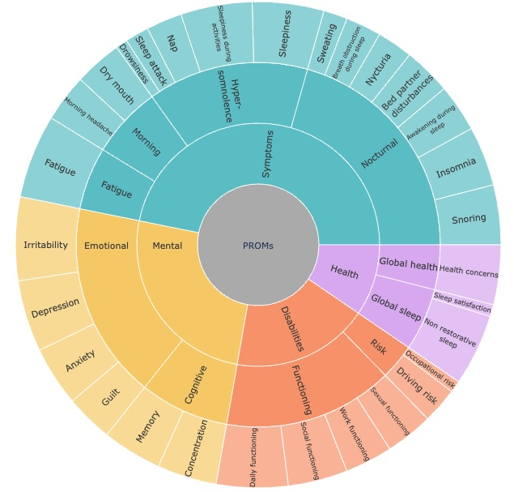
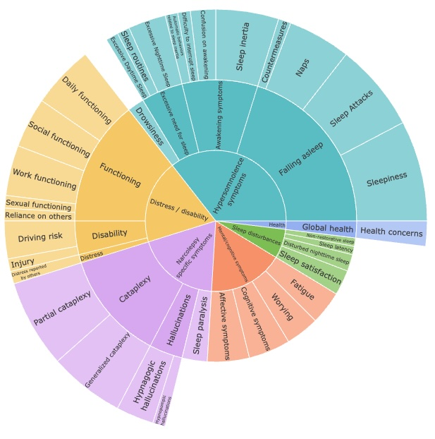
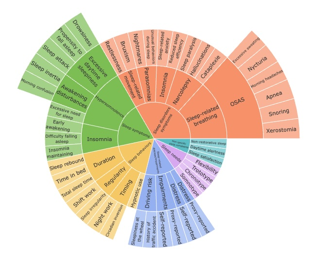
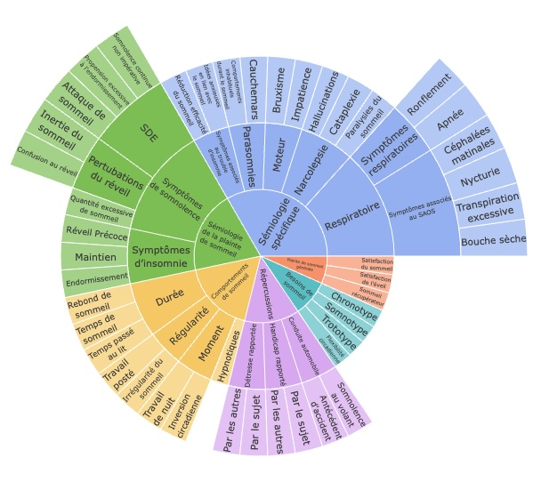
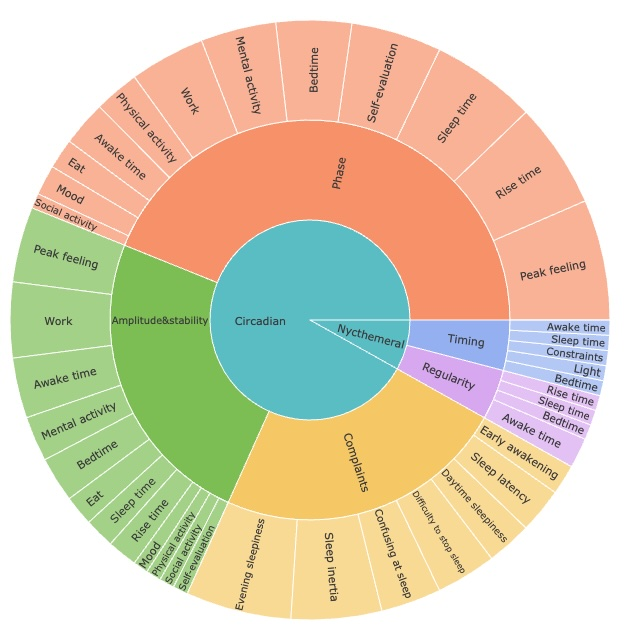
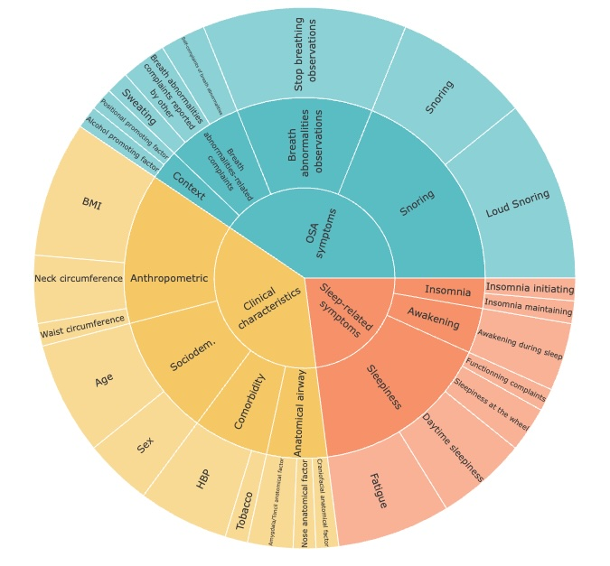
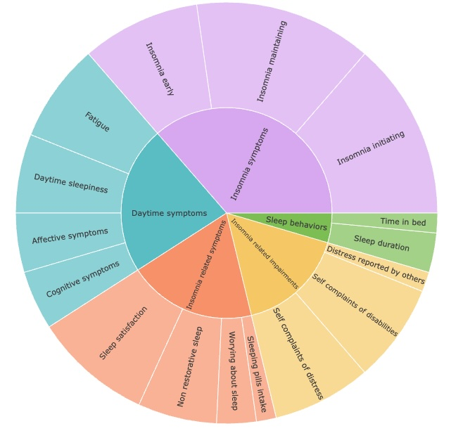
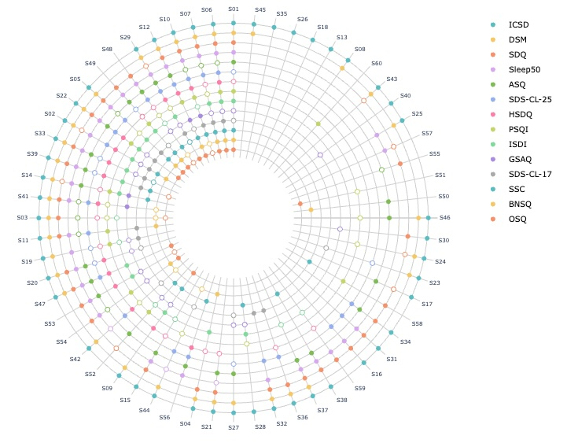

Sleep Semiology
This website catalogues the questionnaires content analyses from different subfields of sleep medicine, led by the SANPSY (Univ. Bordeaux / CHU de Bordeaux, France), in collaboration with other French or international teams.
You may also be interested in our work about psychiatric semiology 🔗.
Contacts: jean-arthur.micoulaud-franchi [at] chu-bordeaux.fr & vpmartin [at] inria.fr
All the figures are under the CC BY-NC-SA 4.0 license








